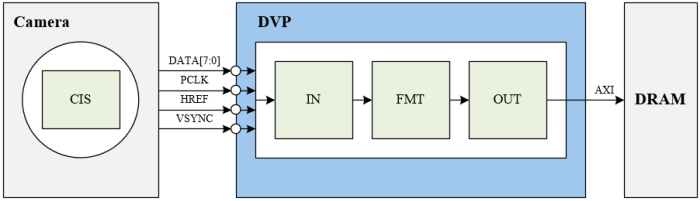
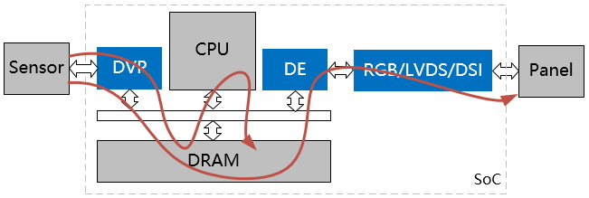

DVP 使用指南
2 Dec 2024
Read time: 1 minute(s)
Digital Video Port (DVP) 模块是一个负责从 Sensor （传感器）中获取数据，经过格式转换或者缩放后输出到内存 (DRAM) 中的硬件组件。DVP
模块应用于嵌入式系统和多媒体设备中，用于处理来自摄像头的视频数据。
| 术语 | 定义 | 注释说明 |
|---|---|---|
| CMA | Contiguous Memory Allocator | 连续内存分配器 |
| DVP | Digital Video Port | 用于接收视频数据数据，转换格式后存放到内存中 |
| VBI | Vertical Blanking Interval | 垂直消隐期 |
| ISP | Image Signal Processing | 图像信号处理，一般指对前端图像传感器输出信号的处理 |
| MBUS | Media Bus | V4L2 框架中用到的一种媒体类型，用于两个 L2 设备之间的协商 |
| MPP | Media Process Platform | 通用多媒体处理软件平台 |
| Sensor | 即 Camera | 本文中指摄像头 |
| VIN | Video Input | 视频输入（采集）模块 |
模块特性
-
最大支持 1080P@30 帧 录像
-
支持 5M 拍照
-
支持 YUV422 和 BT.656 两种方式，BT.656 支持隔行模式，最大支持 8 位输入
-
支持针对图像帧中的行和列分别做裁剪
目前，Luban-Lite DVP 驱动已支持的 Camera 型号有：
-
OV2640、OV2659、OV5640、OV7670
-
TP9950（HD-TVI/CVBS/HD Analog Video Decoder）
-
GM7150（低功耗 NTSC/PAL 视频解码器）
DVP 的硬件框图：

应用场景
从整个系统看，DVP 有以下应用场景：
-
从传感器采集数据到内存中，然后让 DE 将其显示到屏幕上。
-
从传感器采集数据到内存中，使用 CPU 或者 VE 进行编码，最后再将编码后的数据保存到内存中。
